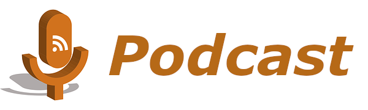

En la actualidad podemos encontrar un amplio abanico de contenidos que da lugar a una tipología de podcast muy diversa. Hay diversas tipologías dependiendo del autor. Vamos a comentar dos tipologías para poder entender mejor cuáles son los tipos de podcast más comunes.
- Por contenido. Los podcast están clasificados de acuerdo al objetivo de dicho contenido:
- Entretenimiento. Aquí podemos encontrar programas como relatos de ficción, reseñas televisivas, críticas de cine, segmentos de humor., etc.
- Formación. Los podcast de formación o educativos son aquellos que tienen por objetivo ofrecer clases o un valor agregado en determinadas materias.
- Informativo. Los podcast de la categoría informativa, de investigación o periodísticos, son aquellos programas cuyo contenido resulta tendencia; parten de noticias actuales y su objetivo es el mismo que un noticiero por radio o televisión informar lo que acontece en el mundo actual.
- Por técnica. Esta tipología hace referencia a la manera en que se presenta el programa.
- Audio. Se reproducen en formato MP3 y su principal característica es que es única y exclusivamente audio.
- Vídeo. También llamados vodcast, vidcast o videocast, son aquellos programas qué combinan el audio del podcast tradicional con video o imagen. Estos programas están grabados normalmente en formato MP4.
